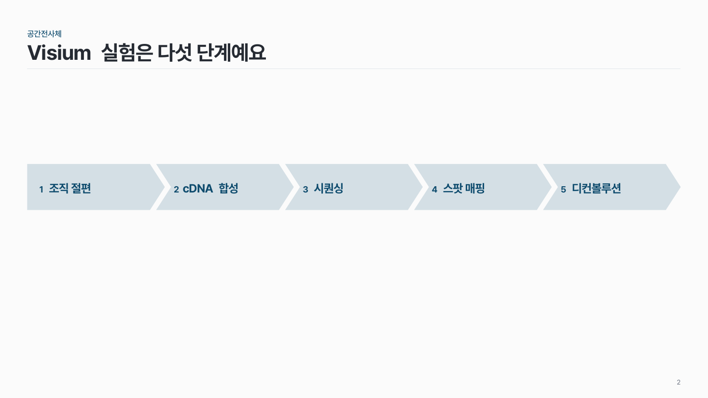

쉐브론 단계 flow-02
화살 모양 칸을 한 줄로 이어 붙이고, 칸 안에 번호와 단계 이름을 넣어요.

이 시안
5단계 · 핵심 단계 하나 강조
슬라이드 제목: 디컨볼루션으로 스팟 속 세포 유형을 추정해요
언제 쓰나
순서가 있는 3–5단계를 한 줄로 짧게 보여 줄 때요. 단계 이름이 칸 안에 들어갈 만큼 짧고, 설명은 아래에 한두 줄이면 충분할 때 맞아요.
구성
- 쉐브론(화살 모양 칸)을 같은 높이로 한 줄에 놓아요. 첫 칸만 뒤가 평평한 오각형이에요.
- 칸 안에 번호와 단계 이름을 써요.
- 칸 바로 아래에 같은 폭으로 설명을 써요.
- 핵심 단계 하나만 가장 진하게 칠해요.
지킬 것
- 쉐브론은 3–5개. 6개가 넘으면 두 장으로 나눠요.
- 단계 이름은 8자 안팎, 설명은 두 줄(30자) 이내.
- 칸 사이 틈은 모두 같게, 좁게.
- 진한 색은 한 단계에만, 나머지는 같은 색의 옅은 명도로.
하지 말 것
- 쉐브론 사이에 화살표를 또 붙이지 않아요. 칸 모양이 이미 방향을 말해 줘요.
- 설명마다 아이콘이나 글머리 기호를 넣지 않아요.
- 단계마다 다른 색을 쓰지 않아요.
PowerPoint에서
도형 > 블록 화살표에서 '갈매기형 수장'(쉐브론)과 '오각형'을 써요. 노란 조절점으로 끝 깊이를 줄이면 글이 들어갈 자리가 넓어져요.
더 볼 게시물 Instagram @peedori_
시안 비교
같은 내용을 옵션만 바꿔 그렸어요. 그림을 누르면 크게 보여요.
A5단계 · 핵심 단계 하나 강조
슬라이드 제목: 디컨볼루션으로 스팟 속 세포 유형을 추정해요

B같은 내용 → 설명 없음 · 강조 없음
슬라이드 제목: Visium 실험은 다섯 단계예요